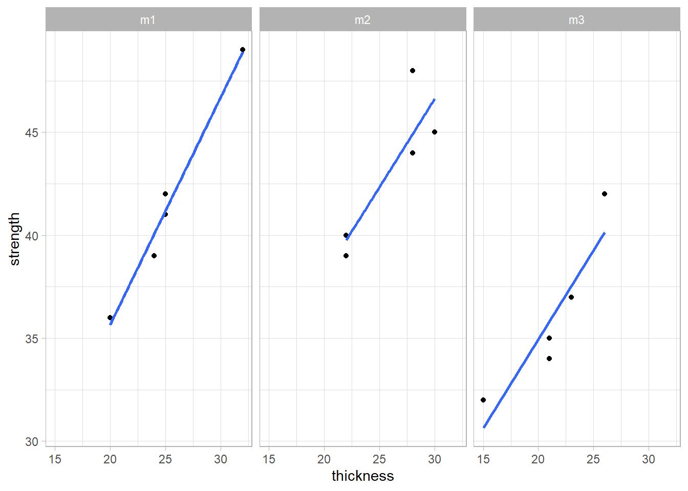

Statistics
In this chapter we’re going to review key statistical concepts used throughout this book. These will be presented in small contained examples serving more as a toolbox. They cover the
Descriptive statistics
- mean
- median
- mode
- variance
- standard deviation
- range
Statistical distributions
- Normal distribution
- Central limit theorem
- Confidence intervals
Statistical tests
- comparing means
- comparing variances
- linear models
- Anova
- Ancova
Modeling
- linear models
We start by loading the first packages we will need:
library(tidyverse)
library(readxl)
library(stats)
filter <- dplyr::filter
select <- dplyr::selectComparing means
t-test one sample
Comparing mean to specification
An engineer has established a contract for cement supply based on the following specification: the average bond strength has to be greater than 17.0 \(kgf/cm^2\) for each delivery. In the contract is also specified that the test protocol which is based on a 30 samples.
A first delivery is submited and the customer wants to know if the lot average breaking strength exceeds the agreed bond level and if so, she wants to accept the lot.
cement_delivery <- read_csv("data/2_cement_delivery.csv")## Parsed with column specification:
## cols(
## strength = col_double()
## )The Quality Control department specialist at the reception starts by calcultating the average, a first criteria to reject the batch:
mean(cement_delivery$strength)## [1] 17.11607The average is above the spec so a next step is to observe the variability and for this she decides to plot the raw data on an histogram. An histogram is a very common plot showing counts for selected intervals.
cement_delivery %>%
ggplot(aes(x = strength)) +
geom_histogram(fill = "cadetblue", color = "grey20") +
theme_light() +
theme(legend.position = "none") +
labs(title = "Cement mortar case study",
subtitle = "Raw data plot",
x = "Treatment",
y = "Bond strength")## `stat_bin()` using `bins = 30`. Pick better value with `binwidth`.
She observes a certain variability in the batch and decides to perform a t-test to assess if the average calculated can be considered statistically greater than the target value:
t.test(x = cement_delivery$strength, mu = 17, alternative = "greater")##
## One Sample t-test
##
## data: cement_delivery$strength
## t = 1.3785, df = 27, p-value = 0.08968
## alternative hypothesis: true mean is greater than 17
## 95 percent confidence interval:
## 16.97266 Inf
## sample estimates:
## mean of x
## 17.11607As the p value is much higher than the usual criteria of 0.05 thus she cannot cannot assume that the average strength of the batch is higher than 17. The batch is therefore rejected.
t-test two samples
Comparing means
In order to avoid similar situations in the future the development engineer considers a new chemical compositions of cement that potentially increases the levels of strenght.
Data loading
cement <- read_csv("data/2_cement.csv")## Parsed with column specification:
## cols(
## Modified = col_double(),
## Unmodified = col_double()
## )cement_long <- cement %>%
pivot_longer(
cols = everything(), names_to = "treatment", values_to = "y"
)Raw data plot
In data analysis it is good practice to start by plotting the raw data and have a first open look at what the first plots tell us.
cement_long %>%
ggplot(aes(x = treatment, y = y, fill = treatment)) +
geom_point() +
theme_light() +
theme(legend.position = "none") +
labs(title = "Cement mortar case study",
subtitle = "Raw data plot",
x = "Treatment",
y = "Bond strength")
Another way to better understanding the bond distributions is to plot a box plot. This type of plot is somehow like the histogram seen before but more compact when several groups are required to be plotted.
cement_long %>%
ggplot(aes(x = treatment, y = y, fill = treatment)) +
geom_boxplot(width = 0.3) +
theme_light() +
theme(legend.position = "none") +
labs(title = "Cement mortar case study",
subtitle = "Raw data plot",
x = "Treatment",
y = "Bond strength")
We would like to understand if the treatment has an effect. Thus we want to compare the two population means. For that we use a t test using samples obtained independently and randomly. Before running the test we also have to check the normality of the samples distributions and equality of their variances.
To do these checks we’re using the stat_qq functions from the ggplot package and plotting the qq plots for both levels in the same plot:
cement_long %>%
ggplot(aes(sample = y, color = treatment)) +
stat_qq() +
stat_qq_line() +
coord_flip() +
theme_light() +
labs(title = "Cement mortar case study",
subtitle = "Raw data plot",
x = "Treatment",
y = "Bond strength")
We observe that for both levels of treatment the data is adhering to the straight line thus we can assume they follow a normal distribution. Also both lines in the qq plot before have equivalent slopes indicating that the assumption of variances is a reasonable one. These verifications are summary ones. We review in subsequent sessions other deeper verifications of such as the shapiro-wilk normality test.
We’re now going to apply the t-test:
library(stats)t.test(y ~ treatment, data = cement_long, var.equal = TRUE)##
## Two Sample t-test
##
## data: y by treatment
## t = -2.1869, df = 18, p-value = 0.0422
## alternative hypothesis: true difference in means is not equal to 0
## 95 percent confidence interval:
## -0.54507339 -0.01092661
## sample estimates:
## mean in group Modified mean in group Unmodified
## 16.764 17.042We see that p < 0.05 thus the means differ significantly. Furthemore the mean difference is estimated with 95% confidence, to be between -0.55 and -0.01 (to be noted that zero is obviously not included in this interval). There is an effect in our treatment that explains the difference in means between the two samples.
t-test two samples paired
hardness <- read_csv("data/2_hardness.csv")## Parsed with column specification:
## cols(
## Tip1 = col_double(),
## Tip2 = col_double()
## )t.test(x = hardness$Tip1, y = hardness$Tip2, paired = TRUE)##
## Paired t-test
##
## data: hardness$Tip1 and hardness$Tip2
## t = -0.26414, df = 9, p-value = 0.7976
## alternative hypothesis: true difference in means is not equal to 0
## 95 percent confidence interval:
## -0.9564389 0.7564389
## sample estimates:
## mean of the differences
## -0.1p > 0.05 thus the means cannot be considered different (we cannot reject the null hypothesis) The mean difference is with 95% confidence between -0.96 and 0.76.
Note that because it is paired although there are 20 measurements there are only 9 degrees of freedom (10 times the differences between the measurements, minus 1).
Randomization of the test sequence is a required practice, not only because of operator effects but also due to other potentially unknown effects like machine warm up.
Comparing variances
Bonett’s test is accurate for any continuous distribution and does not require that the data are normal. Bonett’s test is usually more reliable than Levene’s test.
Levene’s test is also accurate with any continuous distribution. For extremely skewed and heavy tailed distributions, Levene’s method tends to be more reliable than Bonett’s method.
The F-test is accurate only for normally distributed data. Any small deviation from normality can cause the F-test to be inaccurate, even with large samples. However, if the data conform well to the normal distribution, then the F-test is usually more powerful than either Bonett’s test or Levene’s test.
Bonett’s test
Levene test
Homogeneity of variances test
You want test samples to see for homogeneity of variance (homoscedasticity)
library(car)## Le chargement a nécessité le package : carData##
## Attachement du package : 'car'## The following object is masked from 'package:dplyr':
##
## recode## The following object is masked from 'package:purrr':
##
## someleveneTest(y ~ treatment, data = cement_long)## Warning in leveneTest.default(y = y, group = group, ...): group coerced to
## factor.## Levene's Test for Homogeneity of Variance (center = median)
## Df F value Pr(>F)
## group 1 1.9528 0.1793
## 18Pr > 0.05 thus there is homogeneity of the variances (they do not differ significantly).
F-test
We’re now confirming this with a variance test from the stats package.
var.test(y ~ treatment, cement_long)##
## F test to compare two variances
##
## data: y by treatment
## F = 1.6293, num df = 9, denom df = 9, p-value = 0.4785
## alternative hypothesis: true ratio of variances is not equal to 1
## 95 percent confidence interval:
## 0.4046845 6.5593806
## sample estimates:
## ratio of variances
## 1.629257The test null hypothesis is that the variances are equal. Since the p value is much greater than 0.05 we cannot reject the null hypotheses meaning that we can consider them equal.
In other words the probability that the variances are different is 47.85% due to random cause.
- random sampling
Sample size calculation
# Calculate the required sample size for a certain t-test power
cohen_d <- 0.27 / 0.25 # Cohen's effect size = difference of means / sd
# A Cohen's d of 2 means that the averages changed by 2 standard deviations, which is very large.
power.t.test(d = cohen_d, power = 0.95)##
## Two-sample t test power calculation
##
## n = 23.28802
## delta = 1.08
## sd = 1
## sig.level = 0.05
## power = 0.95
## alternative = two.sided
##
## NOTE: n is number in *each* grouplibrary(lsr)# By comparison, calculate Cohen's d for the dataset
cohensD(x = cement$Modified, y = cement$Unmodified)## [1] 0.9780006In this example if we wanted to detect a significant difference of at least 0.25 in the means with a probability of at least 95% (Power of 0.95) we would need to use 8 (7.6) samples of each (to be)
LM - linear models
Now we’re going to move into linear models with a first example. These models are going to be extensively used in the Case Studies namely in the Design of Experiments and in the Measurement System Analysis.
library(tidyverse)
library(janitor)
library(stats)
# library(readxl)
# library(knitr)
# library(car)
# library(pwr)
# library(lsr)
# library(broom)
# library(RcmdrMisc)
# library(agricolae)
filter <- dplyr::filter
select <- dplyr::selectPlasma etching example
Data loading and cleansing:
# Direct copy of the example from the book:
plasma <- read_csv("data/3-1_plasma_etching.csv") %>%
clean_names()## Parsed with column specification:
## cols(
## power = col_double(),
## `1` = col_double(),
## `2` = col_double(),
## `3` = col_double(),
## `4` = col_double(),
## `5` = col_double()
## )plasma_narrow <- plasma %>%
pivot_longer(
cols = starts_with("x"),
names_to = "observation",
values_to = "etch_rate"
)Raw data plot:
ggplot(plasma_narrow, aes(x = power, y = etch_rate)) +
geom_point() +
theme_light() +
theme(legend.position = "none") +
labs(title = "Plasma case study",
subtitle = "Raw data plot",
x = "Power",
y = "Etch rate")
Linear model
Here we’re constructing a linear model of the raw data and not a model of the Anova, thus power has to be as integer and not as a factor, unlike in the Anova model.
library(stats)plasma_lm <- lm(etch_rate ~ power, data = plasma_narrow)
summary(plasma_lm)##
## Call:
## lm(formula = etch_rate ~ power, data = plasma_narrow)
##
## Residuals:
## Min 1Q Median 3Q Max
## -43.02 -12.32 -1.21 16.71 33.06
##
## Coefficients:
## Estimate Std. Error t value Pr(>|t|)
## (Intercept) 137.6200 41.2108 3.339 0.00365 **
## power 2.5270 0.2154 11.731 7.26e-10 ***
## ---
## Signif. codes: 0 '***' 0.001 '**' 0.01 '*' 0.05 '.' 0.1 ' ' 1
##
## Residual standard error: 21.54 on 18 degrees of freedom
## Multiple R-squared: 0.8843, Adjusted R-squared: 0.8779
## F-statistic: 137.6 on 1 and 18 DF, p-value: 7.263e-10Linear regression plot
ggplot(plasma_narrow, aes(x = power, y = etch_rate)) +
geom_point() +
geom_smooth(method = "lm", se = FALSE) +
theme_light() +
theme(legend.position = "none") +
labs(title = "Plasma case study",
subtitle = "Raw data plot",
x = "Power",
y = "Etch rate")## `geom_smooth()` using formula 'y ~ x'
Predicting new values
Here we’re using the model with power as an integer:
power_new <- data.frame(power = c(170, 190))
predict(plasma_lm, newdata = power_new)## 1 2
## 567.21 617.75** R², coefficient of determination
The R square can be extracted from the linear model that has been used to build the Anova model.
summary(plasma_lm)##
## Call:
## lm(formula = etch_rate ~ power, data = plasma_narrow)
##
## Residuals:
## Min 1Q Median 3Q Max
## -43.02 -12.32 -1.21 16.71 33.06
##
## Coefficients:
## Estimate Std. Error t value Pr(>|t|)
## (Intercept) 137.6200 41.2108 3.339 0.00365 **
## power 2.5270 0.2154 11.731 7.26e-10 ***
## ---
## Signif. codes: 0 '***' 0.001 '**' 0.01 '*' 0.05 '.' 0.1 ' ' 1
##
## Residual standard error: 21.54 on 18 degrees of freedom
## Multiple R-squared: 0.8843, Adjusted R-squared: 0.8779
## F-statistic: 137.6 on 1 and 18 DF, p-value: 7.263e-10Thus, in the plasma etching experiment, the factor “power” explains about 88% percent of the variability in etch rate.
pwr.anova.test(k = 4, n = 2, f = plasma_cohend_aov, sig.level = 0.01)
Here I have not yet managed to reproduce the book example. See the example in chapter 5 where this has been successfull thus working as a better approach for the future.
Anova
library(tidyverse)
library(janitor)
library(stats)
# library(readxl)
# library(knitr)
# library(car)
# library(pwr)
# library(lsr)
# library(broom)
# library(RcmdrMisc)
# library(agricolae)
filter <- dplyr::filter
select <- dplyr::selectplasma <- read_csv("data/3-1_plasma_etching.csv") %>%
clean_names()## Parsed with column specification:
## cols(
## power = col_double(),
## `1` = col_double(),
## `2` = col_double(),
## `3` = col_double(),
## `4` = col_double(),
## `5` = col_double()
## )plasma_narrow <- plasma %>%
pivot_longer(
cols = starts_with("x"),
names_to = "observation",
values_to = "etch_rate"
)We can also compare medians and get a sense of the effect of the treatment levels by looking into the box plot:
plasma_narrow_factor <- plasma_narrow %>%
mutate(power = as_factor(power),
observation = as_factor(observation))# Box plot
ggplot(plasma_narrow_factor, aes(x = power, y = etch_rate)) +
geom_boxplot() +
theme_light() +
theme(legend.position = "none") +
labs(title = "Plasma case study",
subtitle = "Raw data plot",
x = "Power",
y = "Etch rate")
1 factor with severals levels + 1 continuous dependent variable Similar to the t-test but extended - this test allows to compare the means between several levels of treatement for a continuous response variable (the t test is only 2 levels at a time, performing all pair wise t-tests would also not be a solution because its a lot of effort and would increase the type I error)
ANOVA principle: the total variability in the data, as measured by the total corrected sum of squares, can be partitioned into a sum of squares of the differences between the treatment averages and the grand average plus a sum of squares of the differences of observations within treatments from the treatment average
Single factor, fixed effects model
Anova on plasma etching example (ANOVA, single factor, fixed effects model)
In R the anova is built by passing the linear model to the anova or aov functions. The output of the anova function is just the anova table as shown here for this first example. The output of the aov function is a list.
plasma_lm_factor <- lm(etch_rate ~ power, data = plasma_narrow_factor)
plasma_anova <- anova(plasma_lm_factor)
plasma_aov <- aov(plasma_lm_factor)
plasma_anova## Analysis of Variance Table
##
## Response: etch_rate
## Df Sum Sq Mean Sq F value Pr(>F)
## power 3 66871 22290.2 66.797 2.883e-09 ***
## Residuals 16 5339 333.7
## ---
## Signif. codes: 0 '***' 0.001 '**' 0.01 '*' 0.05 '.' 0.1 ' ' 1summary(plasma_aov)## Df Sum Sq Mean Sq F value Pr(>F)
## power 3 66871 22290 66.8 2.88e-09 ***
## Residuals 16 5339 334
## ---
## Signif. codes: 0 '***' 0.001 '**' 0.01 '*' 0.05 '.' 0.1 ' ' 1for interpretation of the F value see:
Note that the RF power or between-treatment mean square (22,290.18) is many times larger than the within-treatment or error mean square (333.70). This indicates that it is unlikely that the treatment means are equal. Also p < 0.05 thus we can reject the null hypothesis and conclude that the means are significantly different.
Anova on plasma etching, modification of the example to achieve a p > 0.05:
plasma2 <- read_csv("data/3-1_plasma_etching_2.csv") %>%
clean_names()## Parsed with column specification:
## cols(
## power = col_double(),
## `1` = col_double(),
## `2` = col_double(),
## `3` = col_double(),
## `4` = col_double(),
## `5` = col_double()
## )plasma2_narrow <- gather(plasma2,
observation,
etch_rate, x1, x2, x3, x4, x5)
plasma2_narrow_factor <- plasma2_narrow
plasma2_narrow_factor$power <- as.factor(plasma2_narrow_factor$power)
plasma2_lm_factor <- lm(etch_rate ~ power, data = plasma2_narrow_factor)
anova(plasma2_lm_factor)## Analysis of Variance Table
##
## Response: etch_rate
## Df Sum Sq Mean Sq F value Pr(>F)
## power 3 1476 492.0 1.2015 0.341
## Residuals 16 6552 409.5ggplot(plasma2_narrow_factor, aes(x = power, y = etch_rate)) +
geom_boxplot() +
theme_light() +
theme(legend.position = "none") +
labs(title = "Plasma case study",
subtitle = "Raw data plot",
x = "Power",
y = "Etch rate")
P > 0.05 - there is no significant difference between the means
Model adequacy check
Residuals normality check & outliers
Anova fixed effects assumes that: - errors are normally distributed and are independent
As the number of residuals is too small we’re not checking the normality via the histogram but rather with a a Q-Q plot.
plasma_lm_factor$residuals %>%
as_tibble() %>%
ggplot(aes(sample = value)) +
stat_qq() +
stat_qq_line() +
coord_flip() +
theme_light() +
theme(legend.position = "none") +
labs(title = "Plasma case study",
subtitle = "Residuals q-q plot",
y = "Sample quantiles",
x = "Theoretical Quantiles")
The plot suggests normal distribution. The verification can be completed by a test. For populations < 50 use the shapiro-wilk normality test.
shapiro.test(plasma_lm_factor$residuals)##
## Shapiro-Wilk normality test
##
## data: plasma_lm_factor$residuals
## W = 0.93752, p-value = 0.2152p > 0.05 indicates that the residuals do not differ significantly from a normally distributed population.
Standardized residuals graph
A second graph shows that the standardised residuals are normally distributed (explanation in a later chunk). This specific Standardize residuals graph also help detecting outliers in the residuals (any residual > 3 standard deviations is a potential outlier).
plot(plasma_aov, which = 2)
Plot of residuals in time sequence
A tendency to have runs of positive of negative results indicates that the independency assumption does not hold.
Such plot needs that the order of data collection is available in the dataframe. In the example below this is NOT the case as the residuals from the model are sequenced as they appear in the plasma dataframe.
plot(plasma2_lm_factor$residuals)
Plot of residuals versus fitted values
If the model is correct and the assumptions hold, the residuals should be structureless. This plot should not reveal any obvious pattern.
plot(plasma_aov, which = 1)
Equality of variances test (Barlett’s test)
In the plasma etch experiment, the normality assumption is not in question, so we can apply Bartlett’s test to the etch rate data.
(Bartlett’s test is very sensitive to the normality assumption. Consequently, when the validity of this assumption is doubtful, Bartlett’s test should not be used. In this case use the Modified Levene test).
bartlett.test(etch_rate ~ power, data = plasma_narrow)##
## Bartlett test of homogeneity of variances
##
## data: etch_rate by power
## Bartlett's K-squared = 0.43349, df = 3, p-value = 0.9332The P-value is P = 0.934, so we cannot reject the null hypothesis. There is no evidence to counter the claim that all five variances are the same. This is the same conclusion reached by analyzing the plot of residuals versus fitted values.
Tuckey’s pairwise comparison test
The Anova may indicate that the treament means differ but it won’t indicate which ones. In this case we may want to compare pairs of means.
plasma_tukey <- TukeyHSD(plasma_aov, ordered = TRUE)
plasma_tukey## Tukey multiple comparisons of means
## 95% family-wise confidence level
## factor levels have been ordered
##
## Fit: aov(formula = plasma_lm_factor)
##
## $power
## diff lwr upr p adj
## 180-160 36.2 3.145624 69.25438 0.0294279
## 200-160 74.2 41.145624 107.25438 0.0000455
## 220-160 155.8 122.745624 188.85438 0.0000000
## 200-180 38.0 4.945624 71.05438 0.0215995
## 220-180 119.6 86.545624 152.65438 0.0000001
## 220-200 81.6 48.545624 114.65438 0.0000146plot(plasma_tukey)
The differences reproduce exactly the book example.
My conclusion is that for all differences p < 0.05, thus all differences are significantly different. Therefore, each power setting results in a mean etch rate that differs from the mean etch rate at any other power setting.
Fisher’s LSD - pairwise comparison test
Fisher’s Least Significant difference is an alternative to Tuckey’s test.
library(agricolae)plasma_LSD <- LSD.test(y = plasma_narrow_factor$etch_rate,
trt = plasma_narrow_factor$power,
DFerror = plasma_anova$Df[2],
MSerror = plasma_anova$`Mean Sq`[2],
alpha = 0.05)
plasma_LSD## $statistics
## MSerror Df Mean CV t.value LSD
## 333.7 16 617.75 2.957095 2.119905 24.49202
##
## $parameters
## test p.ajusted name.t ntr alpha
## Fisher-LSD none plasma_narrow_factor$power 4 0.05
##
## $means
## plasma_narrow_factor$etch_rate std r LCL UCL Min Max Q25 Q50
## 160 551.2 20.01749 5 533.8815 568.5185 530 575 539 542
## 180 587.4 16.74216 5 570.0815 604.7185 565 610 579 590
## 200 625.4 20.52559 5 608.0815 642.7185 600 651 610 629
## 220 707.0 15.24795 5 689.6815 724.3185 685 725 700 710
## Q75
## 160 570
## 180 593
## 200 637
## 220 715
##
## $comparison
## NULL
##
## $groups
## plasma_narrow_factor$etch_rate groups
## 220 707.0 a
## 200 625.4 b
## 180 587.4 c
## 160 551.2 d
##
## attr(,"class")
## [1] "group"plot(plasma_LSD)
Although the LSD value output from the test doesn’t match exactly the book value of 33.09 the conclusion is the same and can be interpreted from the fact that all means are in different groups (different letters).
Sample size calculation
Refer to “Statistiques faciles avec R,” page 233. Cohen’s effect size is calculated with the eta squared from the model (intriguing is the same value as the R²…). In this case with 2 replicates we obtain a power of 90% and an alpha of 1%. I’ve not managed here to replicate the values from the Montgomery book.
library(pwr)
library(lsr)plasma_eta2 <- etaSquared(plasma_aov)[1]
plasma_cohend_aov <- sqrt(plasma_eta2 / (1 - plasma_eta2))Ancova
We assess here the potential utilisation of the analysis of covariance (ancova) in situations where a continuous variable may be influencing the measured value. This technique complements the analysis of variance (anova) allowing for a more accurate assessment of the effects of the categorical variables.
Approach
Below a description of the approach taken from (Montgomery 2012), pag.655:
Suppose that in an experiment with a response variable y there is another variable, say x, and that y is linearly related to x. Furthermore, suppose that x cannot be controlled by the experimenter but can be observed along with y. The variable x is called a covariate or concomitant variable. The analysis of covariance involves adjusting the observed response variable for the effect of the concomitant variable.
If such an adjustment is not performed, the concomitant variable could inflate the error mean square and make true differences in the response due to treatments harder to detect. Thus, the analysis of covariance is a method of adjusting for the effects of an uncontrollable nuisance variable. As we will see, the procedure is a combination of analysis of variance and regression analysis.
As an example of an experiment in which the analysis of covariance may be employed, consider a study performed to determine if there is a difference in the strength of a monofilament fiber produced by three different machines. The data from this experiment are shown in Table 15.10 (below). Figure 15.3 presents a scatter diagram of strength (y) versus the diameter (or thickness) of the sample. Clearly, the strength of the fiber is also affected by its thickness; consequently, a thicker fiber will generally be stronger than a thinner one. The analysis of covariance could be used to remove the effect of thickness (x) on strength (y) when testing for differences in strength between machines.
library(tidyverse)## -- Attaching packages -------------------------------------- tidyverse 1.3.0 --## v ggplot2 3.3.2 v purrr 0.3.4
## v tibble 3.0.3 v dplyr 1.0.2
## v tidyr 1.1.1 v stringr 1.4.0
## v readr 1.3.1 v forcats 0.5.0## library(knitr)
library(readxl)
filter <- dplyr::filter
select <- dplyr::selectfilament <- read_excel("data/filament.xlsx")
filament %>%
kable()| machine | strength | thickness |
|---|---|---|
| m1 | 36 | 20 |
| m1 | 41 | 25 |
| m1 | 39 | 24 |
| m1 | 42 | 25 |
| m1 | 49 | 32 |
| m2 | 40 | 22 |
| m2 | 48 | 28 |
| m2 | 39 | 22 |
| m2 | 45 | 30 |
| m2 | 44 | 28 |
| m3 | 35 | 21 |
| m3 | 37 | 23 |
| m3 | 42 | 26 |
| m3 | 34 | 21 |
| m3 | 32 | 15 |
Below a plot of strenght by thickness:
filament %>%
ggplot(aes(x = thickness, y = strength)) +
geom_point() +
geom_smooth(method = "lm", se = FALSE) +
theme_light()## `geom_smooth()` using formula 'y ~ x'## Warning: Computation failed in `stat_smooth()`:
## objet 'lm' de mode 'function' introuvable
# as the plot is slightly different from the book, the plot below has been done
# in base R just to confirm and we get exactly the sameas with ggplot2.
par(mfrow=c(1,1))
plot(filament$thickness, filament$strength)
# plot(jitter(filament$strength, 1), jitter(filament$thickness, 1))
abline(lm(strength~thickness, data = filament))And a short test to assess the strenght of the correlation:
library(stats)##
## Attachement du package : 'stats'## The following object is masked _by_ '.GlobalEnv':
##
## filter## The following objects are masked from 'package:dplyr':
##
## filter, lagcor.test(filament$strength, filament$thickness)##
## Pearson's product-moment correlation
##
## data: filament$strength and filament$thickness
## t = 9.8039, df = 13, p-value = 2.263e-07
## alternative hypothesis: true correlation is not equal to 0
## 95 percent confidence interval:
## 0.8209993 0.9797570
## sample estimates:
## cor
## 0.938542Going further and using the approach from (Broc 2016) I’m faceting the scatterplots to assess if the coefficient of the linear regression is similar for all the levels of the machine factor:
filament %>%
ggplot(aes(x = thickness, y = strength)) +
geom_point() +
geom_smooth(method = "lm", se = FALSE) +
facet_wrap(facets = "machine") +
theme_light()## `geom_smooth()` using formula 'y ~ x'
Visually this is the case, going from one level to the other is not changing the relationship between thickness and strenght - increasing thickness increases stenght. Visually the slopes are similar but the number of points is small. In a real case this verification could be extended with the correlation test for each level or/and a statistical test between slopes.
Case study
We’re now reproducing in R the ancova case study from the book, still using the aov function.
The way to feed the R function arguments is obtained from https://www.datanovia.com/en/lessons/ancova-in-r/
Note that in the formula the covariate goes first (and there is no interaction)! If you do not do this in order, you will get different results.
Ancova
Three different machines produce a monofilament fiber for a textile company. The process engineer is interested in determining if there is a difference in the breaking strength of the fiber produced by the three machines. However, the strength of a fiber is related to its diameter, with thicker fibers being generally stronger than thinner ones. A random sample of five fiber specimens is selected from each machine.
filament_ancova <- aov(strength ~ thickness + machine, filament)
summary(filament_ancova)## Df Sum Sq Mean Sq F value Pr(>F)
## thickness 1 305.13 305.13 119.933 2.96e-07 ***
## machine 2 13.28 6.64 2.611 0.118
## Residuals 11 27.99 2.54
## ---
## Signif. codes: 0 '***' 0.001 '**' 0.01 '*' 0.05 '.' 0.1 ' ' 1All values from the book table page 662 are correctly obtained with the code above. In particular:
- machine in this table corresponds to the adjusted machines mean square
- residuals in this table corresponds to the error
to be noted that the R anova table gives the thickness meansquare while the book doesn’t.
Conclusions from the book in page 662:
Comparing the adjusted treatment means with the unadjusted treatment means (the y i. ), we note that the adjusted means are much closer together, another indication that the covariance analysis was necessary.
A basic assumption in the analysis of covariance is that the treatments do not influence the covariate x because the technique removes the effect of variations in the x i. . However, if the variability in the x i. is due in part to the treatments, then analysis of covariance removes part of the treatment effect. Thus, we must be reasonably sure that the treatments do not affect the values x ij.
In some experiments this may be obvious from the nature of the covariate, whereas in others it may be more doubtful. In our example, there may be a difference in fiber diameter (x ij ) between the three machines. In such cases, Cochran and Cox (1957) suggest that an analysis of variance on the x ij values may be helpful in determining the validity of this assumption. …there is no reason to believe that machines produce fibers of different diameters.
(I did not go further here as it goes beyond the scope of the assessment)
Comparison with anova
Below I’m doing the common approach we’ve been using at NSTC in design of experiments.
filament_aov <- aov(strength ~ machine, filament)
summary(filament_aov)## Df Sum Sq Mean Sq F value Pr(>F)
## machine 2 140.4 70.20 4.089 0.0442 *
## Residuals 12 206.0 17.17
## ---
## Signif. codes: 0 '***' 0.001 '**' 0.01 '*' 0.05 '.' 0.1 ' ' 1The anova table obtained also corresponds correctly to the book example.
Montgomery final observations:
It is interesting to note what would have happened in this experiment if an analysis of covariance had not been performed, that is, if the breaking strength data (y) had been analyzed as a completely randomized single-factor experiment in which the covariate x was ignored. The analysis of variance of the breaking strength data is shown in Table 15.14. We immediately notice that the error estimate is much longer in the CRD analysis (17.17 versus 2.54). This is a reflection of the effectiveness of analysis of covariance in reducing error variability.
We would also conclude, based on the CRD analysis, that machines differ significantly in the strength of fiber produced. This is exactly opposite the conclusion reached by the covariance analysis.
If we suspected that the machines differed significantly in their effect on fiber strength, then we would try to equalize the strength output of the three machines. However, in this problem the machines do not differ in the strength of fiber produced after the linear effect of fiber diameter is removed. It would be helpful to reduce the within-machine fiber diameter variability because this would probably reduce the strength variability in the fiber.
Potential applications
In the scope of methods validations this approach could potentially be used in robustness validations when there is suspiction that a continuous variable is disturbing the measurement.
Naturally this should not be applied everywhere but only where there would to be logical a physical or chemical reason behind as in the example with thickness and strenght.